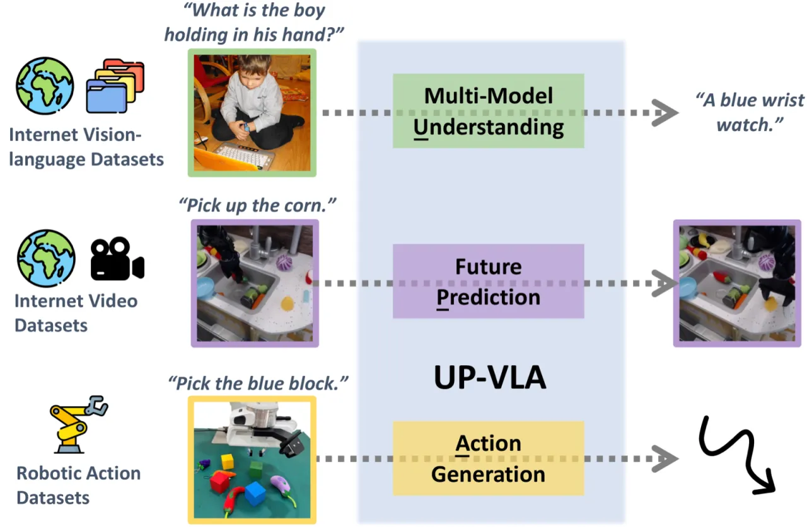
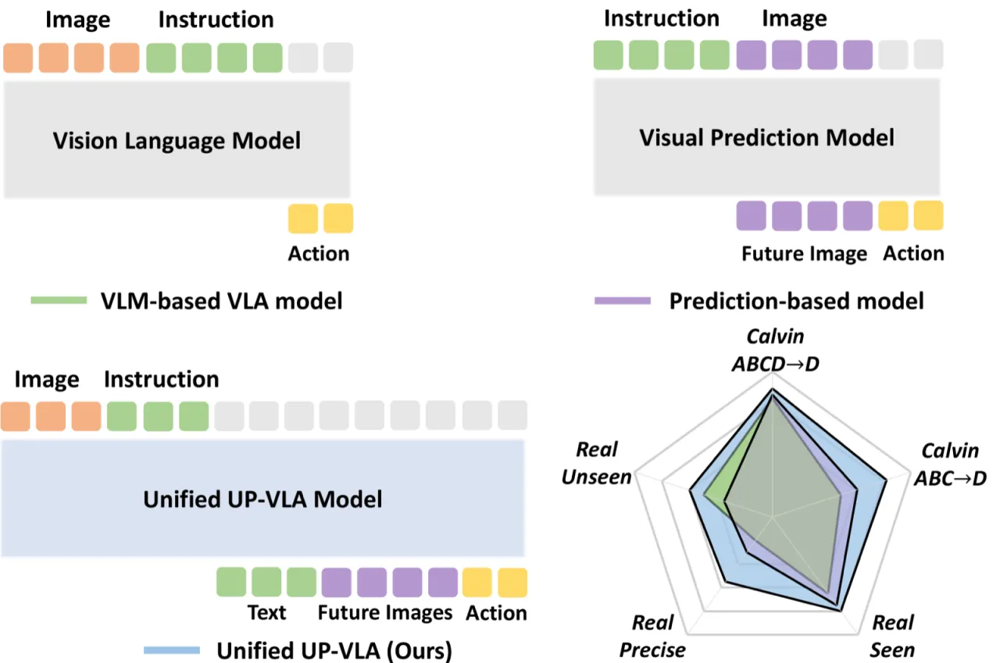
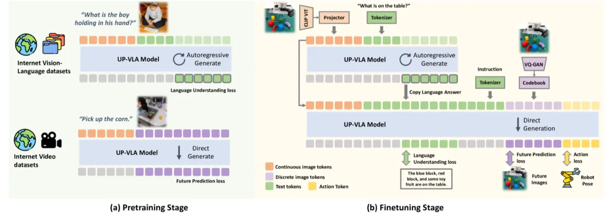
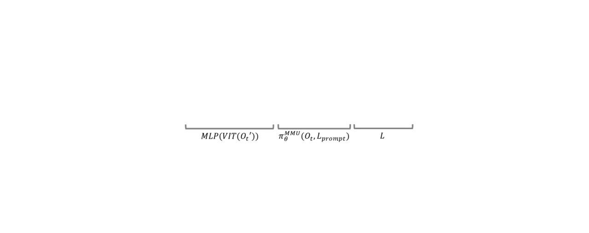
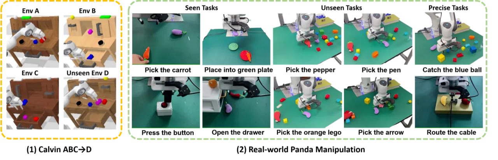
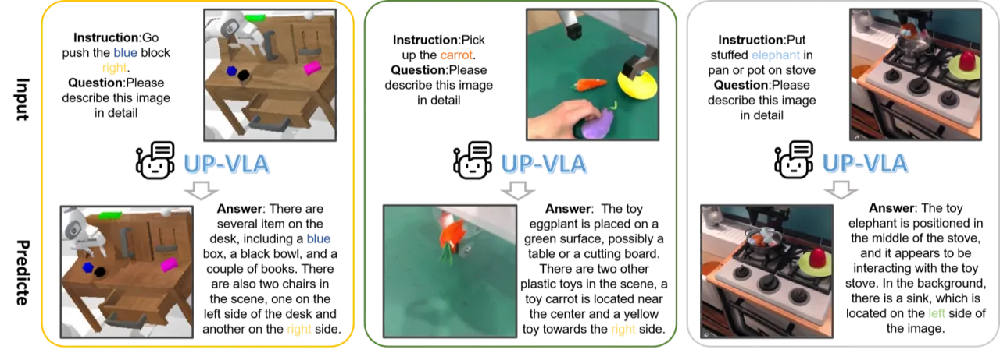
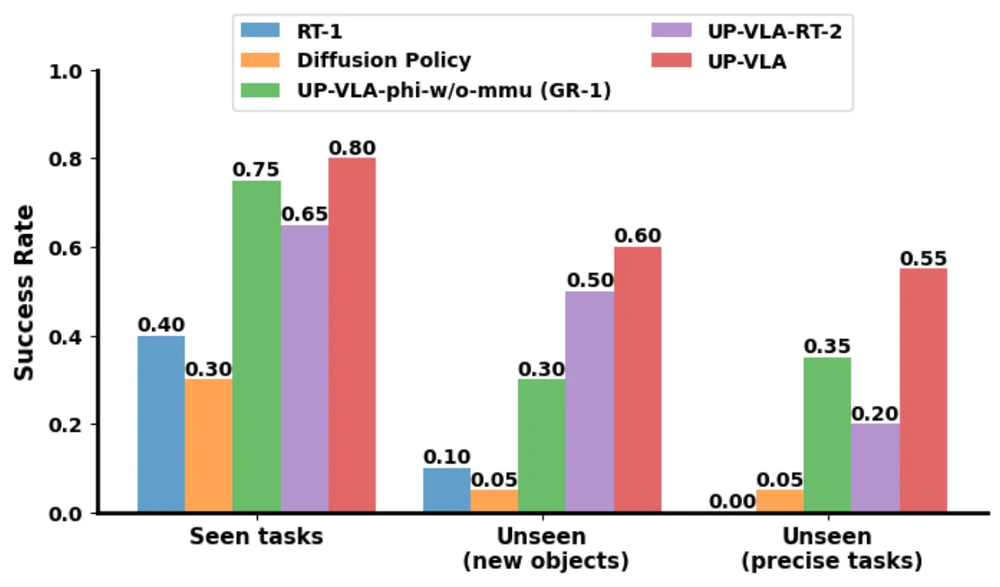

UP-VLA 通过联合训练 multi-modal understanding（MMU）和 future visual prediction（PRE）两个目标，弥补了现有 VLA 模型在低层空间理解上的不足。在仿真基准 Calvin ABC-D 上，UP-VLA 以平均完成长度 4.08 超越上一最优方法 GR-1 (3.06) 达 33%；在真实机械臂任务中，已见场景成功率达 80%，未见物体泛化成功率 58%。
Vision-Language-Action (VLA) 模型借助大规模预训练 VLM 的语义知识，大幅提升了机器人策略的泛化能力。然而，现有 VLM 以高层语义理解为主，对低层视觉特征（距离、尺寸、空间关系）理解不足，而这些恰是机器人精细操作任务所必需的。
"VLMs often focus on high-level semantic content and neglect low-level features, limiting their ability to capture detailed visual and spatial information. These aspects, which are crucial for robotic control tasks, remain underexplored in existing pre-training paradigms."


UP-VLA 以 Phi-1.5（1.5B 参数）作为语言骨干，将 CLIP-ViT（连续 token，用于理解）和 VQ-GAN（离散 token，用于预测）双路图像编码器的输出统一送入同一 LLM，通过三个互补目标联合训练：多模态理解（MMU）、未来图像预测（PRE）以及动作学习（ACT），模型初始化自 Show-o（1.3B，512×512）。


给定图像连续 token u 和已生成语言 token，最大化下一个语言 token 的对数似然：
ℒ_MMU = Σi log pθ(li | u, l1,…,li-1)
预训练数据：LLaVa-tuning-665k（665k 图文对），涵盖 VQA、描述、推理等任务，赋予模型丰富语义知识。
以语言指令和当前观测为条件，逐位预测未来帧的 VQ-GAN 离散 token，使用 cross-entropy 损失：
ℒ_PRE = Σj log pθ(v'j | l, v1,…,vM)
预训练数据：Bridge 数据集（25k 机械臂演示），强迫模型学习动作执行后的视觉后果，建立低层空间先验。
在动作数据上同时预测下一帧图像和机器人动作，合并损失为：
ℒ = λ₁ℒMMU + λ₂ℒPRE + λ₃ℒACT
其中 ℒACT = Σ‖âpos − apos‖²₂ + BCE(âend, aend)，分别约束末端执行器 6-DoF 相对位移（MSE）和夹爪开合状态（BCE）。
模型生成场景描述（VQA 自问自答）后将其拼接到 prompt 中，为动作推断提供明确的语义上下文，进一步利用 MMU 能力。训练 20k steps，batch size 64，前 1k steps 线性 warmup。
使用 Franka-Emika Panda 机械臂，收集 2k+ 演示（6 项技能，人工远程操控 + 脚本策略），涵盖抓取、摆放、插线等任务；测试分为已见场景、未见物体、精细操作三类，各执行 20 次。

在仿真基准 Calvin（ABC→D / ABCD→D）和真实 Franka 机械臂任务上与 RT-1、Robo-Flamingo、GR-1 等强基线对比，评测指标为平均任务完成长度（Avg. Length，最高 5）和操作成功率。
| 方法 | 类型 | Avg. Len ↑ | Task 1 | Task 2 | Task 3 | Task 4 | Task 5 |
|---|---|---|---|---|---|---|---|
| RT-1 | other | 0.90 | 0.533 | 0.222 | 0.094 | 0.038 | 0.013 |
| Diffusion Policy* | other | 0.56 | 0.402 | 0.123 | 0.026 | 0.008 | 0.000 |
| 3D Diffuser Actor | other | 3.35 | 0.938 | 0.803 | 0.662 | 0.533 | 0.412 |
| 3D-VLA | VLA | 0.71 | 0.447 | 0.163 | 0.081 | 0.016 | 0.000 |
| UP-VLA-RT-2* | VLA | 1.44 | 0.612 | 0.389 | 0.236 | 0.138 | 0.062 |
| Robo-Flamingo | VLA | 2.47 | 0.824 | 0.619 | 0.466 | 0.331 | 0.235 |
| Uni-Pi | Prediction | 0.92 | 0.560 | 0.160 | 0.080 | 0.080 | 0.040 |
| SuSIE | Prediction | 2.69 | 0.870 | 0.690 | 0.490 | 0.380 | 0.260 |
| GR-1 | Prediction | 3.06 | 0.854 | 0.712 | 0.596 | 0.497 | 0.401 |
| UP-VLA-phi-w/o-mmu* | Prediction | 3.13 | 0.844 | 0.705 | 0.604 | 0.520 | 0.430 |
| UP-VLA | Prediction&VLA | 4.08 | 0.928 | 0.865 | 0.815 | 0.769 | 0.699 |
| 方法 | 类型 | Avg. Len ↑ | Task 1 | Task 2 | Task 3 | Task 4 | Task 5 |
|---|---|---|---|---|---|---|---|
| RT-1 | other | 2.45 | 0.844 | 0.617 | 0.438 | 0.323 | 0.227 |
| Robo-Flamingo | VLA | 4.09 | 0.964 | 0.896 | 0.824 | 0.740 | 0.660 |
| GR-1 | Prediction | 4.21 | 0.949 | 0.896 | 0.844 | 0.789 | 0.731 |
| UP-VLA | Prediction&VLA | 4.42 | 0.962 | 0.921 | 0.879 | 0.842 | 0.812 |
| 消融变体 | ABC→D Avg.Len ↑ | 真实已见任务 ↑ | 真实未见物体 ↑ |
|---|---|---|---|
| w/o MMU | 3.89 | 0.85 | 0.20 |
| w/o Bridge-Pretrain | 2.74 | 0.65 | 0.30 |
| w/o Prediction | 1.44 | 0.65 | 0.35 |
| w/o MMU-Condition | 3.99 | 0.80 | 0.50 |
| Full UP-VLA | 4.08 | 0.80 | 0.58 |
消融结果表明：去掉 visual prediction（Avg. Len 骤降至 1.44）和 Bridge 预训练（降至 2.74）影响最大，说明低层空间预测目标是模型核心收益来源。MMU-Condition（将自生成场景描述拼接入 prompt）对未见物体的泛化贡献显著（从 0.50 → 0.58）。


由于"数据规模和骨干网络的限制（constraints in data scale and backbone）"，模型对特定物体的识别有时不准确，导致 VQA 质量参差不齐，进而影响 MMU-Condition 的效果。
在 Calvin D 环境中，预测的未来帧有时出现与当前输入帧背景颜色不一致的颜色伪影，原因是训练数据（Bridge 数据集）的视觉分布与测试环境存在偏差，模型尚未充分泛化到新场景的视觉风格。
当前 Bridge 预训练数据（25k 演示）规模有限，导致视觉预测在多样场景下不够鲁棒，限制了 PRE 目标在更广泛真实部署中的收益上限。未来引入更大规模、更多样的机器人视频数据有望突破此瓶颈。
（inferred from design）采用双路图像编码器（CLIP-ViT + VQ-GAN）加上自回归未来帧预测，推理时计算量大于单路 VLA；在实时高频控制场景下延迟较高，论文未给出推理速度的具体数据。